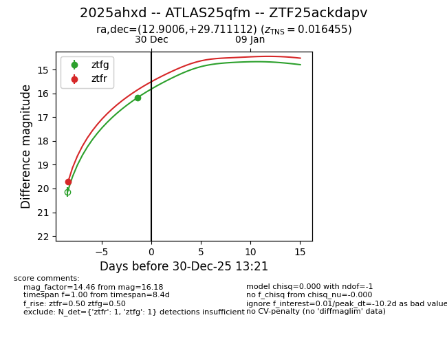
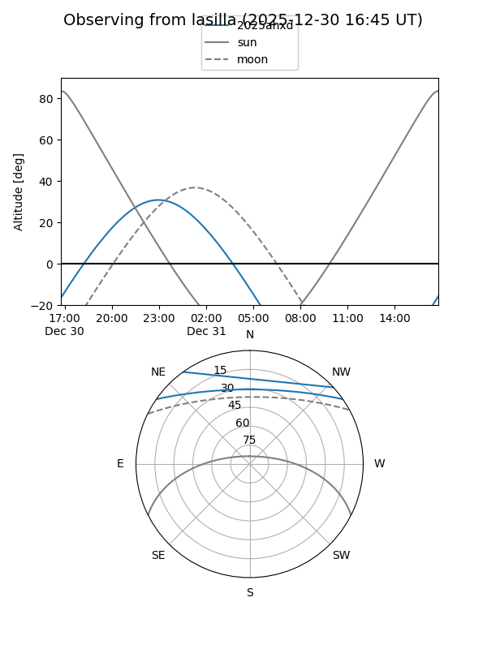
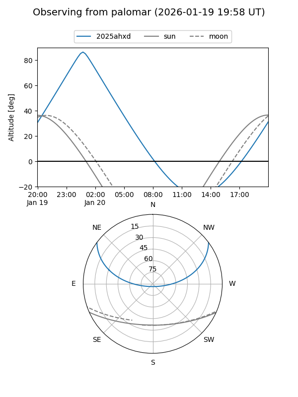
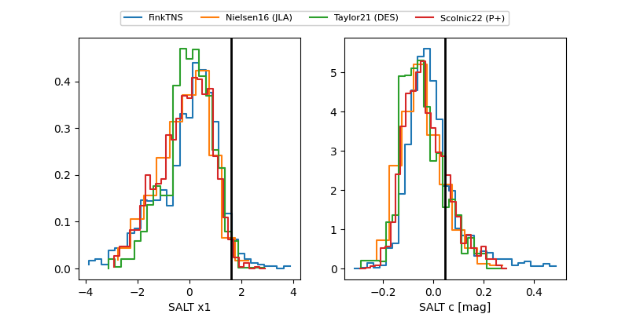

2025ahxd
Target 2025ahxd at 2026-01-18 05:45
Aliases and brokers:
FINK: link
Lasair: link
ALeRCE: link
TNS: link
YSE: link
alt names
ZTF25ackdapv (ztf,fink_ztf)
2025ahxd (tns,yse)
ATLAS25qfm (atlas)
Coordinates:
equatorial (ra, dec) = 12.9006,+29.71111
equatorial (HMS+DMS) = 00:51:36.15,+29:42:40.00
galactic (l, b) = (122.9746,-33.16062)
Flags:
confirmed ia
Photometry:
last atlasc=15.37, atlaso=15.65, ztfg=15.46, ztfr=15.39
3 atlasc, 4 atlaso, 8 ztfg, 10 ztfr detections
Lightcurve

Visibility


Additional plots
